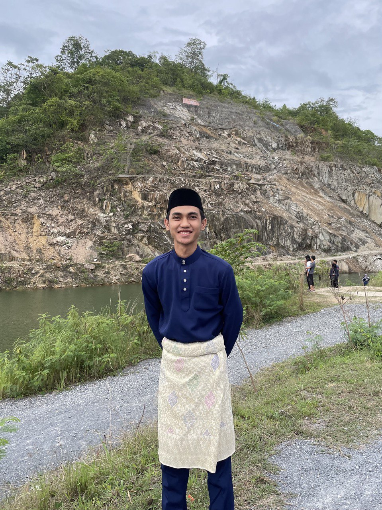

MUHAMMAD AQIL SYARIMAN
Junior Web Delevoper
Profile
Self-motivated in learning programming and passion want to be as
developer. Experiencing on working in a team.
Education
-
SMK Agama Dato' Haji Abbas (2014-2018)
Result:
-
University Malaysia Perlis (2014-2018)
Result:
- CGPA 3.3 (Diploma of Computer Engineering)
-
CGPA 3.6 (Bachelor Engineering Electronic Network Design)
Employment History
- Internship at CTRM Aero Composites Sdn Bhd (2022)
-
Resolved project-related issues to ensure smooth development.
- Experienced in handling HTML, CSS, JavaScript, and React.
- Developed and maintained the company’s front-end.
- Managed and optimized the company’s database.
- Working as a designer at Tipi Berkat Bina SDN BHD (2023)
- Designed marketing materials and visual using Canva.
- Managed product scanning and sales transactions
-
Assisted in enhancing brand presence through creative content.
Skills
Language
Programming Language
- HTML ⭐⭐⭐⭐
- CSS ⭐⭐⭐
- JavaScript ⭐⭐
- C ⭐
- C++ ⭐
- Python ⭐
Certifications
-
Junior Cybersecurity Analyst Career Path with Cisco Networking
Academy
Here
-
Cybersecurity Essentials with Cisco Networking Academy
Here
-
Introduction to Cybersecurity
CertVerified Badge
-
CCNAv7: Introduction to Networks
Here
{kind=link}
{kind=link}
{kind=link}
{kind=link}
{kind=link}